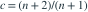

独立样本来自  ，记最大值为
，记最大值为  。在估计量
。在估计量  中，使
中，使 ![E[(T_c-\theta)^2]](../practice/math/7ff77938d1f0282f2383.svg) 最小的
最小的  是多少？
是多少？
，记最大值为 。在估计量 中，使 最小的 是多少？- A

- B

- C

- D

我已思考，展开答案与解析
正确答案：A
- 由
 与
与  ，均方误差除以
，均方误差除以  后为 。
后为 。 - 这是关于 c 的严格凸二次函数，求导置零得到

。 - 此时最小均方误差为
 ；该估计量一般有偏，但均方误差小于无偏校正估计量。
；该估计量一般有偏，但均方误差小于无偏校正估计量。
易错提醒无偏约束下的系数与不加无偏约束的 MSE 最优系数不同。
南审 813 · 2025 · 一·2(2)，PDF第1页
从大题拆分考点并重新编写选项；数值或设问有调整。
查看参考来源